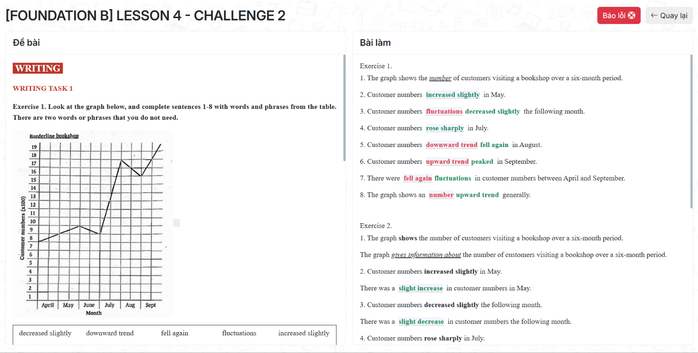
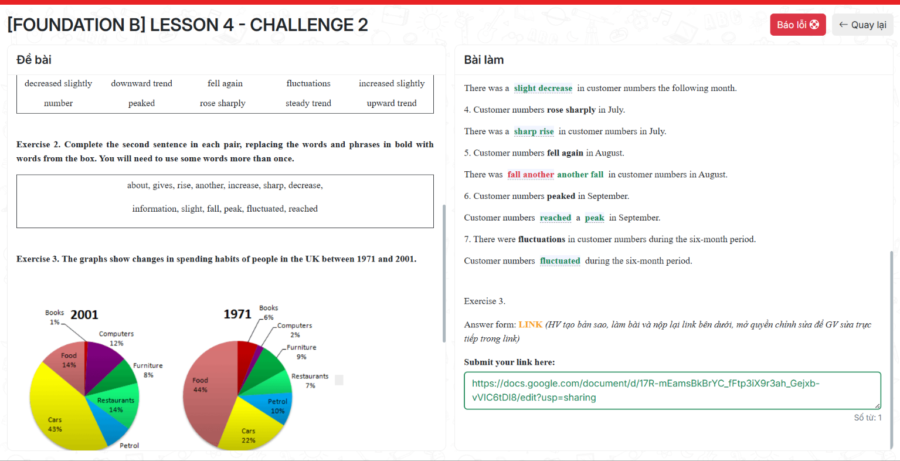
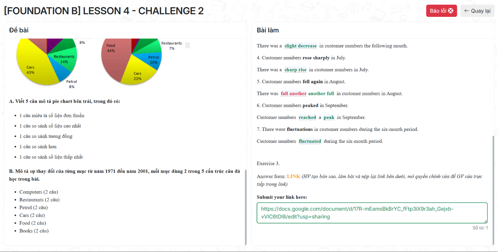

Đề bài
WRITING
WRITING TASK 1
Exercise 1. Look at the graph below, and complete sentences 1-8 with words and phrases from the table.
There are two words or phrases that you do not need.
Borderline bookshop
Word bank: decreased slightly · downward trend · fell again · fluctuations · increased slightly · peaked · rose sharply · steady trend · upward trend · number
Ảnh bản gốc Exercise 1

Exercise 2. Complete the second sentence in each pair, replacing the words and phrases in bold with words from the box.
about · gives · rise · another · increase · sharp · decrease · information · slight · fall · peak · fluctuated · reached
Ảnh bản gốc Exercise 2

Exercise 3. The graphs show changes in spending habits of people in the UK between 1971 and 2001.
Viết 5 câu mô tả pie chart và 2 câu cho mỗi mục: Computers, Restaurants, Petrol, Cars, Food, Books.
Answer form: LINK
Ảnh bản gốc Exercise 3

Bài làm
Exercise 3 — Submit your link here:
Số từ: 0